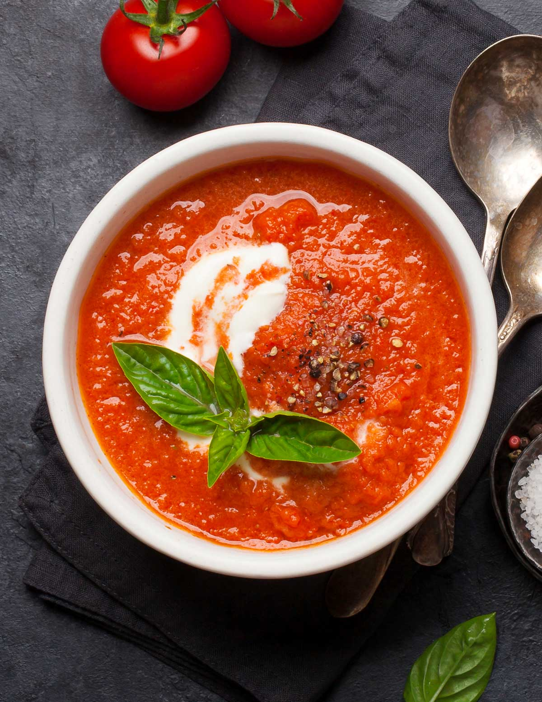
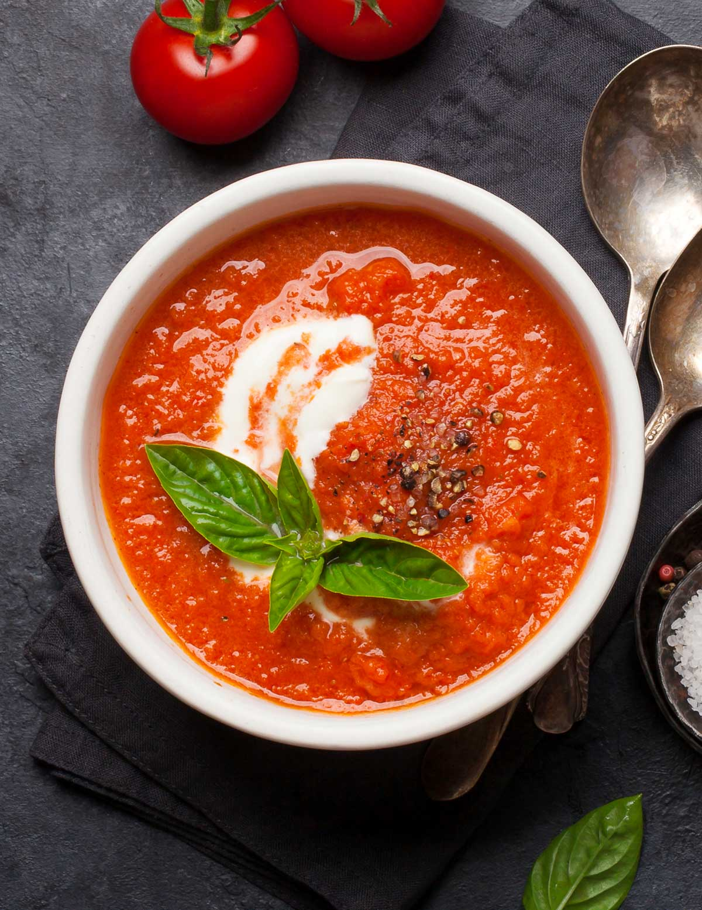

My Favorite Reciepe
The Best Grill Cheese You'll Ever Have!
 

Ingredients:
- 2 slices of white bread
- 2 tablespoons of mayonnaise
- 1 tablespoon of unsalted butter
- 2 ounces of thinly sliced American cheese or cheddar (about 4 slices)
- Freshly ground black pepper
- Tomato Soup
Preperation:
- Place bread on a cutting board and spread mayonnaise over top side of each
- Heat a small skillet (nonstick, ideally) over medium.
- Slide in half of butter.
- When it melts, place 1 slice of bread, mayonnaise side down, in skillet; top with cheese; season with pepper.
- Top with second slice of bread, mayonnaise side up.
- When underside is golden brown, about 4 minutes, turn sandwich and add remaining butter to skillet.
- Press down on sandwich to encourage even browning and to help melt cheese—be gentle, don’t smash it.
- Cook until second side is golden brown and cheese is melted.
- Eat immediately, preferably with tomato soup.
Hello everyone, I found this recipe on google and it is from Alison Roman. When I was young I wasn't really a fan of school lunch so my mom would pack me lunch from home, but one day I saw a new item being served that I never saw before and I wanted to try it. It was called grill cheese and it was offered with tomato soup. When I tried it, I loved it and ever since I make it time to time when I'm in a hurry and need a quick snack.
If you would like to visit the webpage from which I found this reciepe you can visit it here. You can also find numerous other tasty recipes there.